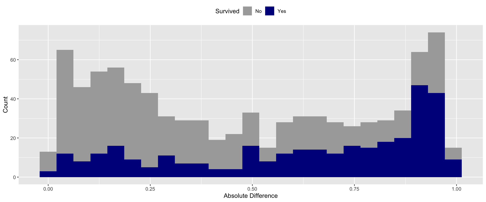
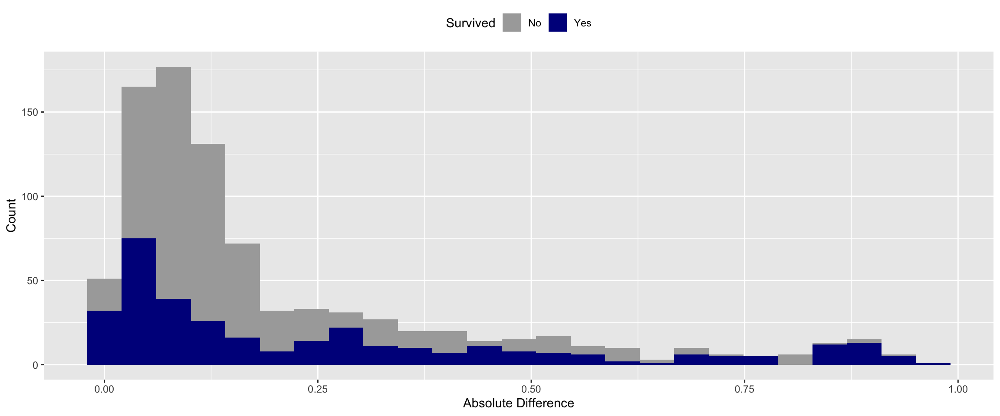
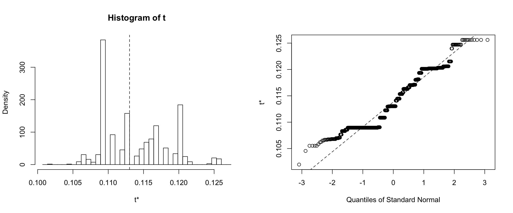
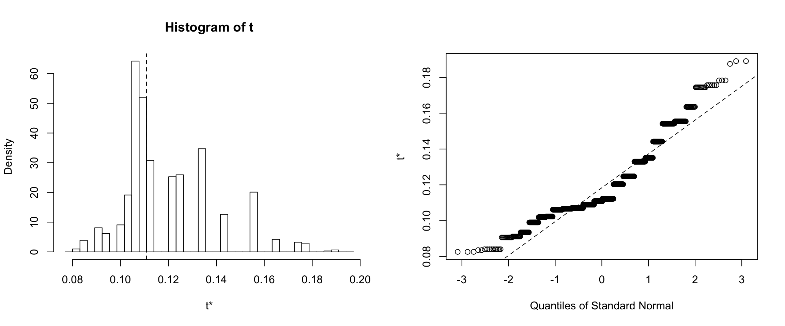
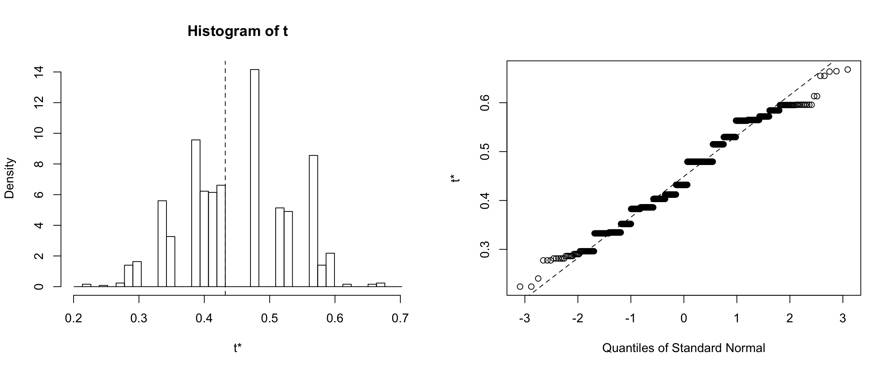

Machine Learning, P-values and Confidence Intervals
How do you know your ML results aren’t due to chance?
In hypothesis testing, scientists use p-values and confidence intervals to make sure their observations are not due to chance. Can we do something similar in ML?
In machine learning, data scientists generally look at out-of-sample validation to determine the fitness of a model. But can we test specifically if the model is picking up relationships that are really there, or are only there by chance?
I think this would be valuable in situations where you have very wide datasets with many columns and few samples, or if you are modeling on small datasets generally, for example if you don’t have enough data for a test set.
I used the titanic dataset on kaggle to explore this idea.
The first step is to get the training set and get it ready for modeling.
#Get Train Set Ready *******
Boat <- read.csv("train.csv")
#Title and Last Name
Boat$title<- word(Boat$Name,1, sep = fixed('.'))
Boat$title<- word(Boat$title,-1)
Boat$lastName <- word(Boat$Name, 1)
##Embarked
Boat$Embarked[Boat$Embarked == ""] <- "C"
##Remove
Boat$Ticket <- NULL
Boat$lastName <- NULL
TrainID <- Boat$PassengerId
Boat$PassengerId <- NULL
Boat$Name <- NULL
##Factors
Boat$Sex <- as.numeric(Boat$Sex)
Boat$Pclass <- as.factor(as.numeric(Boat$Pclass))
##Age
Boat$Age[is.na(Boat$Age)] <- median(Boat$Age, na.rm = TRUE)
Boat$Fare[is.na(Boat$Fare)] <- median(Boat$Fare, na.rm = TRUE)
##Title
Boat$title2[Boat$title == "Lady" |
Boat$title == "Countess" |
Boat$title == "Don" |
Boat$title == "Dr" |
Boat$title == "Rev" |
Boat$title == "Sir" |
Boat$title == "Johnkheer"] <- "Rare"
Boat$title2[Boat$title == "Major" |
Boat$title == "Countess" |
Boat$title == "Capt"] <- "Officer"
Boat$title2[is.na(Boat$title2)] <- "Common"
Boat$title2 <- NULL
Boat$Cabin <- NULL
#write.csv(Boat, file = "trainboat_fin.csv")
I ran an xbgTree algorithm on the training data.
#Rmodel*****************
set.seed(1)
xbg <- train(factor(Survived) ~.,
method = 'xgbTree',
data = Boat); print(xbg)
The confusion matrix shows the model has an overall accuracy ~ 83%.
confusionMatrix(xbg)FALSE Bootstrapped (25 reps) Confusion Matrix
FALSE
FALSE (entries are percentual average cell counts across resamples)
FALSE
FALSE Reference
FALSE Prediction 0 1
FALSE 0 54.8 10.1
FALSE 1 7.1 28.0
FALSE
FALSE Accuracy (average) : 0.828
This is where it get’s interesting…
So I have a basic model that I ran on a famous dataset, now what?
I want to be able to examine whether or not the modeling is accurate by chance. On approach that comes to mind is to randomize the dataset and rerun it through the algorithm.
##Perturb Data *****
Boat_random <- Boat
Boat_Label <- Boat$Survived
Boat_random$Survived <- NULL
Boat_random = as.data.frame(lapply(Boat_random, function(x) { sample(x) }))
Run the randomized dataset through the original model.
The data in this case is randomized, meaning that the columns do not contain information regarding the target. The model performance should degrade in response this randomization.
random_pred <-predict(xbg, Boat_random, type="prob")
random_pred2 <-predict(xbg, Boat_random)
Let’s take a look at the confusion matrix.
The confusion matrix shows an accuracy of ~53%
random_pred2 <- as.factor(random_pred2)
Actual <- as.factor(Boat_Label)
confusionMatrix(Actual, random_pred2)FALSE Confusion Matrix and Statistics
FALSE
FALSE Reference
FALSE Prediction 0 1
FALSE 0 367 182
FALSE 1 232 110
FALSE
FALSE Accuracy : 0.5354
FALSE 95% CI : (0.502, 0.5685)
FALSE No Information Rate : 0.6723
FALSE P-Value [Acc > NIR] : 1.00000
FALSE
FALSE Kappa : -0.0102
FALSE
FALSE Mcnemar's Test P-Value : 0.01603
FALSE
FALSE Sensitivity : 0.6127
FALSE Specificity : 0.3767
FALSE Pos Pred Value : 0.6685
FALSE Neg Pred Value : 0.3216
FALSE Prevalence : 0.6723
FALSE Detection Rate : 0.4119
FALSE Detection Prevalence : 0.6162
FALSE Balanced Accuracy : 0.4947
FALSE
FALSE 'Positive' Class : 0
FALSE
Next I wanted to see the error distribution of the random model.
The model shouldn’t predict well because there are no real relationships in the data. However, it should get some right just by chance. I used a simple difference metric to evaluate the fitness of the model. Specifically, I subtracted the predicted probability by the actual value (0 or 1). I then took the median of the absolute difference.
Boat_random$Actual <- Boat_Label
Boat_random$Random_Pred <- random_pred[,2]
Boat_random$Survived[Boat_random$Actual == 1] <- "Yes"
Boat_random$Survived[Boat_random$Actual == 0] <- "No"
Boat_random$diff <- Boat_random$Actual - Boat_random$Random_Pred
Boat_random$diff_abs <- abs(Boat_random$diff)
median(Boat_random$diff_abs)FALSE [1] 0.4612427
With random data the median error of the model is ~46%.
You can see above that the algorithm did not predict well for either class when the data was randomized. 
In order compare apples to apples, I ran the training data through the model again as well.
With meaningful data the median error of the model is only ~11%. This is a large reduction of error compared to model that predicted on random data. This is a good sign that our model is picking up relevant patterns.
#Predict on training data for comparison**********
boat_training_exp <- Boat
survived <- boat_training_exp$Survived
boat_training_exp$Survived <- NULL
real_pred <-predict(xbg, boat_training_exp,type="prob")
boat_training_exp$prediction <- real_pred[,2]
boat_training_exp$actual <- survived
boat_training_exp$diff <- boat_training_exp$actual - boat_training_exp$prediction
boat_training_exp$diff_abs <- abs(boat_training_exp$diff)
median(boat_training_exp$diff_abs)

There is a reduction in error of the predictions when I add meaningful vs. random data. But this doesn’t address whether or not this decrease is due to chance
I decided can borrow a concept from non-parametric statistics and use a wilcoxon-signed-rank test to compare the distributions of absolute errors (random vs. training). I chose this test because it relies on medians rather than means, so it does not assume a normal distribution.
wilcoxon_data = data.frame(Random= Boat_random$diff_abs, Training=boat_training_exp$diff_abs)
res <-wilcox.test(wilcoxon_data$Training, wilcoxon_data$Random)
resFALSE
FALSE Wilcoxon rank sum test with continuity correction
FALSE
FALSE data: wilcoxon_data$Training and wilcoxon_data$Random
FALSE W = 189736, p-value < 0.00000000000000022
FALSE alternative hypothesis: true location shift is not equal to 0
The results show that the p-value is very small (0.00000000000000000000), meaning that we can with reasonable credibility assert that the reduction in error that we see with our XBGTree model predicting on real vs. random data is likely not due to chance.
What about confidence intervals?
P-values are nice, but they are not especially useful on their own. Confidence intervals would be a big boost to my confidence in the differences.
I used another non-parametric approach to calculate these as well. Specifically, I used a bootstrapping technique and took 1000 random samples from the random and training absolute error and calculated the median for each of those random samples.
bootstrap_data = data.frame(Random= Boat_random$diff_abs, Training=boat_training_exp$diff_abs)
med.diff2 <- function(data, indices) {
d <- data[indices] # allows boot to select sample
return(median(d))
}
# bootstrapping with 1000 replications
results_training <- boot(data=bootstrap_data$Training, statistic=med.diff2, R=1000)
results_random <- boot(data=bootstrap_data$Random, statistic=med.diff2, R=1000)
#kable(results_random)
Results for the Training dataset
Results for the non-random training dataset showed that 95% of the medians calculated from 1000 bootstrapped error samples are between ~10% and ~12%.

Confidence intervals for Training dataset
# get 95% confidence interval
tci <- boot.ci(results_training, type=c("norm"))confidence interval is: 95.0%, 10.3%, 12.1%
Results for the Random dataset
Results for the random dataset showed that 95% of the medians calculated from 1000 bootstrapped error samples are between ~42% to ~52%.

Confidence intervals for Random dataset
# get 95% confidence interval
rci <-boot.ci(results_random, type=c("norm"))
confidence interval is: 95.0%, 41.6%, 51.8%
Does this difference in these metrics decrease with smaller samples sizes?
I want to see if these metrics degrade with smaller sample sizes. If so, then this logic may really be a good measure of whether or not your modeling results are due to chance. With smaller datasets one should be less confident.
P-value
You can see below that the p-value for the smaller dataset is larger than for all of the data, suggesting that this logic scales.
# get 95% confidence interval
wilcoxon_data_10per = sample_n(wilcoxon_data, 89)
res_2 <-wilcox.test(wilcoxon_data_10per$Training, wilcoxon_data_10per$Random)
res_2FALSE
FALSE Wilcoxon rank sum test with continuity correction
FALSE
FALSE data: wilcoxon_data_10per$Training and wilcoxon_data_10per$Random
FALSE W = 2200, p-value = 0.0000003052
FALSE alternative hypothesis: true location shift is not equal to 0Whole datset p-value is: 0
10% datset p-value is: 0.0000003
Bootstrapping
I applied the same bootstrapping principles to the small dataset as well.
small_data <- boat_training_exp
colnames(small_data)[colnames(small_data)=="diff_abs"] <- "train_diff"
small_data$random_diff <- Boat_random$diff_abs
small_data <- sample_n(small_data, 89)
# bootstrapping with 1000 replications
results_training_small <- boot(data=small_data$train_diff, statistic=med.diff2, R=1000)
results_random_small <- boot(data=small_data$random_diff, statistic=med.diff2, R=1000)
Non-random Training data: 10%
The confidence interals for the small vs. whole dataset are wider for the non-randomized sample.

Confidence intervals for training data: 10%
# get 95% confidence interval
tci2 <-boot.ci(results_training_small, type=c("norm"))
tci2$normalFALSE conf
FALSE [1,] 0.95 0.06630774 0.1403901
Whole datset confidence interval is: 95.0%, 10.3%, 12.1%
10% datset confidence interval is: 95.0%, 6.6%, 14.0%
Randomized data: 10%
The confidence interals for the small vs. whole dataset are wider for the random sample as well.

Confidence intervals for random dataset: 10%
# get 95% confidence interval
rci2 <-boot.ci(results_random_small, type=c("norm"))
rci2$normalFALSE conf
FALSE [1,] 0.95 0.2518102 0.5783673
Whole datset confidence interval is: 95.0%, 41.6%, 51.8%
10% datset confidence interval is: 95.0%, 25.2%, 57.8%
Summary
I created an XGBTree model with the caret package on the Titanic dataset with about ~83% accuracy.
When I ran a randomized dataset through the model the accuracy dropped by quite a lot to ~53%.
I calculated the differences between the predicted and actual values simply by subtracting the probability of surival by the class (0 or 1) and taking the absolute value. I then calculated the medians.
The median errors for the random data: 46.1%
The median errors for the non-random data: 11.3%
Then I plotted the distributions of these errors for the random and non-random samples.
I then wanted to see if the differences were due to chance, so I rand those error’s through a Wilcoxon sign ranked test - which is a way to compare to non-normal distributions. This test determined that these error distributions are significantly different: p-value: 0.00000000000000000000.
After finding the p-vlaue I used a non-parametric bootstrapping method to calculate confidence intervals.
The confidence intervals in the non-random data (95.0%, 10.3%, 12.1%) are lower than the random data (95.0%, 41.6%, 51.8%), further supporting that these two distributon of errors do not have much overlap.
- The final thing I wanted to test was whether or not this method would be impacted by sample size. Confidence in findings should theoretically decrease when I use smaller samples, so I took a random sample of 10% of the original dat and recalculated these metrics.
P-values
Whole datset p-value is: 0.00000000000000000000
10% datset p-value is: 0.0000003
Confidence Intervals: non-random
Whole datset confidence interval for the non-random data is: 95.0%, 10.3%, 12.1%
10% datset confidence interval for the non-random data is is: 95.0%, 6.6%, 14.0%
Confidence Intervals: random
Whole datset confidence interval for the random dataset is: 95.0%, 41.6%, 51.8%
10% datset confidence interval for the random dataset is: 95.0%, 25.2%, 57.8%
Discussion
I set out to try and apply some of the validation metrics used in statistics to machine learning. The idea is certainly not totally there, but I think this process is a good start to marrying two fundamental concepts between statistics and machine learning.
The p-values and confidence intervals scale down in a way that makes sense with a smaller dataset.
Some other ideas:
Instead of using an absolute error, this could be refined by doing the same process with a metric like LogLoss - which has some interesting properties on it’s own.
Using non-parametric comparisons make sense if you don’t know the distribution of the data, but what if you do?
Maybe running one random permutation isn’t enough, are there concepts that can be borrowed from Montecarlo simulations? Or is this just extra work without any benefit?
I ran a random sample as well as the training sample through the dataset, but I did not use the test sample (mostly because the results are not publically available).